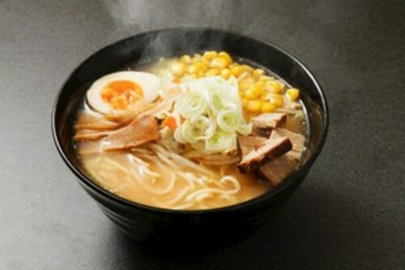

Miso Ramen
Flavored with pork and chicken broth with a mix of toppings such as chashu and ramen egg, this bowl of Miso Ramen is going to satisfy your craving. When you’re in Japan, you will quickly learn that there are 3 basic ramen flavors: shio (salt), shoyu (soy sauce), and miso (fermented soybean paste).
INGREDIENTS
For the Ramen Soup:
- 2 cloves garlic
- 1 knob ginger
- 1 shallot
- 1 Tbsp toasted white sesame seeds
- 1 Tbsp roasted sesame oil
- 1/4 lb ground pork
- 1 tsp doubanjiang
- 3 Tbsp miso
- 1 Tbsp sugar
- 1 Tbsp sake
- 4 cups Chicken Stock
- 1 tsp kosher salt
- 1/4 tsp white pepper powder
For the Ramen and Toppings:
- 2 servings(10-12oz) ramen noodles
- Chashu
- Bean sprouts
- Egg(Ajitsuke Tamago)
- nori
- scallion
INSTRUCTIONS
Prepare the Soup:
- Mince the garlic
- Mince the shallot
- Grind the sesame seeds
- In a medium sized pot, heat the sesame oil over medium-low heat and add the minced garlic, shallot and ginger. Stir until fragrant
- Add the meat and increase heat to medium, cook until no longer pink.
- Add the bean paste(doubanjiang) and miso, blend well with meat.
- Add the ground sesame and sugar and mix well
- Add the sake and chicken stock and bring to simmer
- Taste and add salt and white pepper as necessary
- Cover and keep simmering while you cook the noodles
Prepare the Noodles and Toppings:
- IMPORTANT:Prepare the toppings ahead of time so you can serve the hot ramen immediately.
- Bring a large pot of unsalted water to boil. While the water is boiling gently shake and separate the noodles to loosen them up
- Cook the noodles according to package instructions.
- When the noodles are done, pick them up with a mesh sieve and shake out excess water. Serve noodles in bowl.
- Add the ramen soup and toppings
- Serve and enjoy!